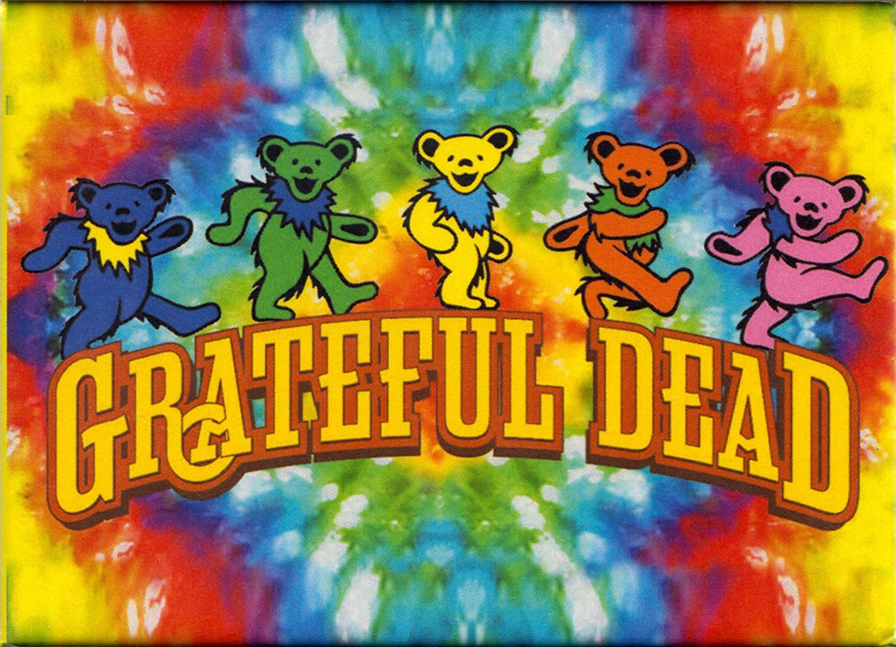

História da Grateful Dead Bears
O Grateful Dead Bears é uma série de ursos dançantes que foram vistos pela primeira vez na capa do álbum History of the Grateful Dead, Volume One (Bear's Choice) de 1973. Desde então eles se tornaram um símbolo da banda, e obviamente, produtos relacionados aos famosos ursos se tornaram extremamente colecionáveis por todos os fãs, tanto da banda, quando dos ursos em si.
Tênis Nike x Ben&Jerry's
Falando do tênis propriamente dito, uma primeira imagem nos mostra um cabedal em pelúcia, algo similar ao que temos no pack "Three Bears" de 2006. Para o swoosh, uma versão espetada do logo da Nike foi colocada, representando o adereço que fica no pescoço dos ursos. Para finalizar, um bolso secreto fica atrás da língua, famoso pelos fãs de Dunk para esconder o que cada um acha mais interessante.
Ao que tudo indica, outras cores serão lançadas, representando outros ursos da turma. Infelizmente ninguém sabe uma data de lançamento ainda